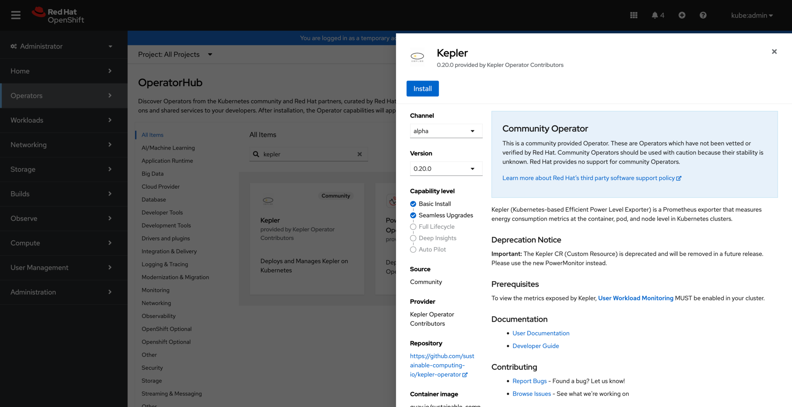
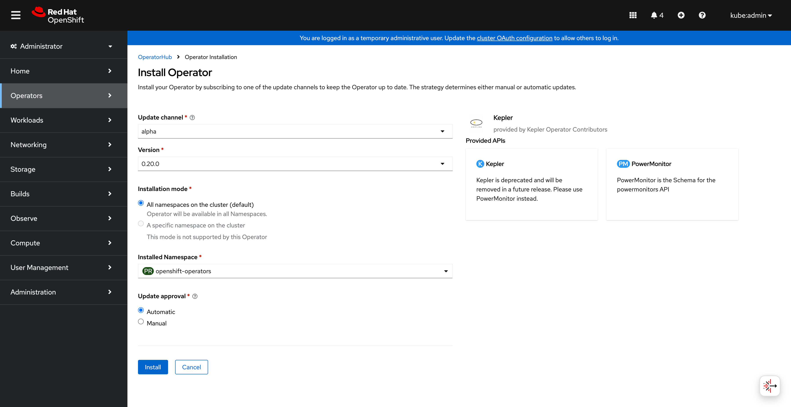
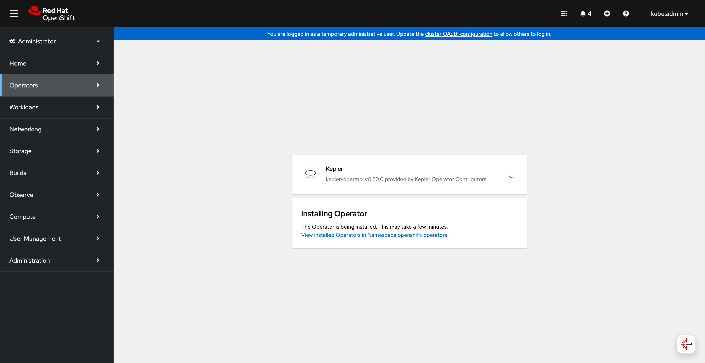
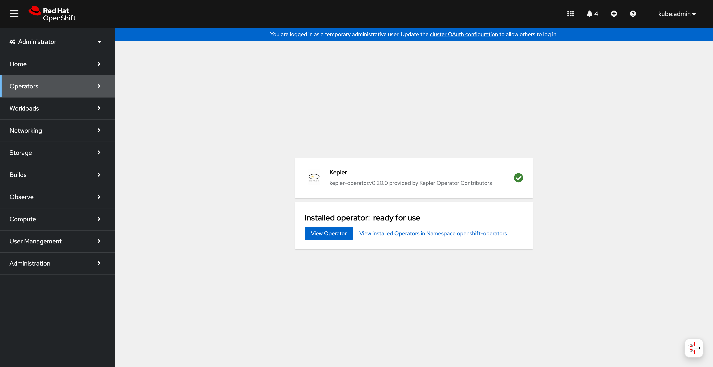
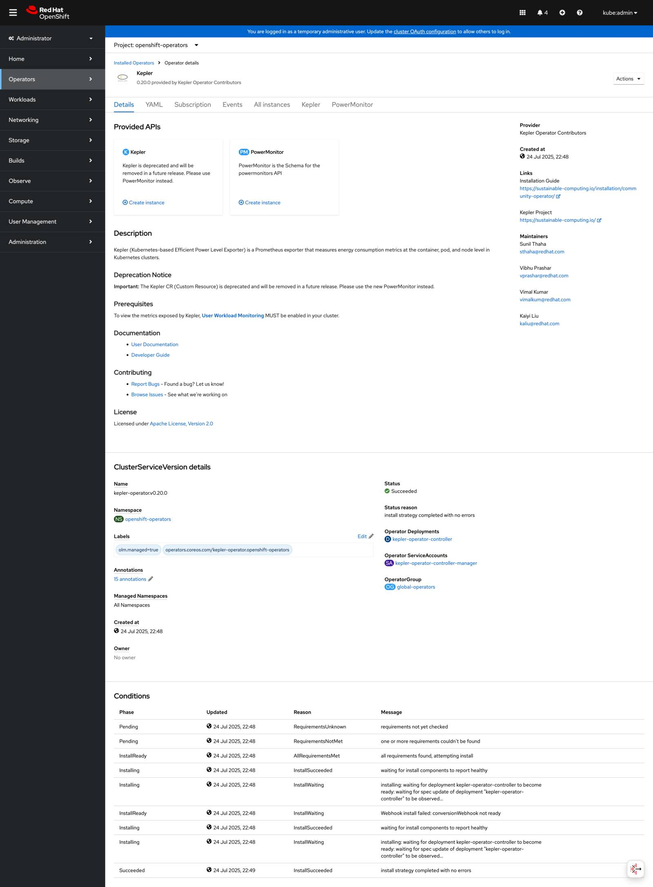
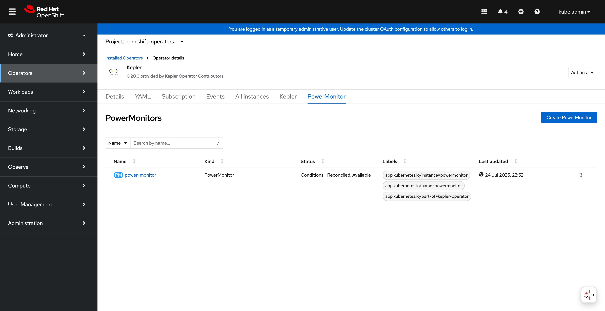
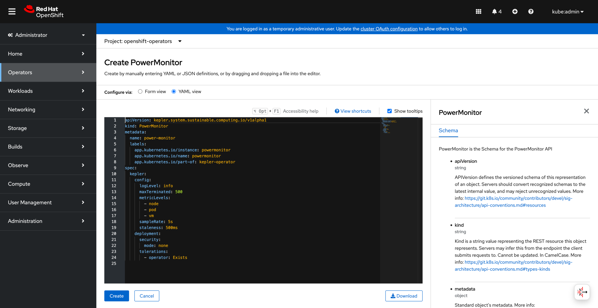
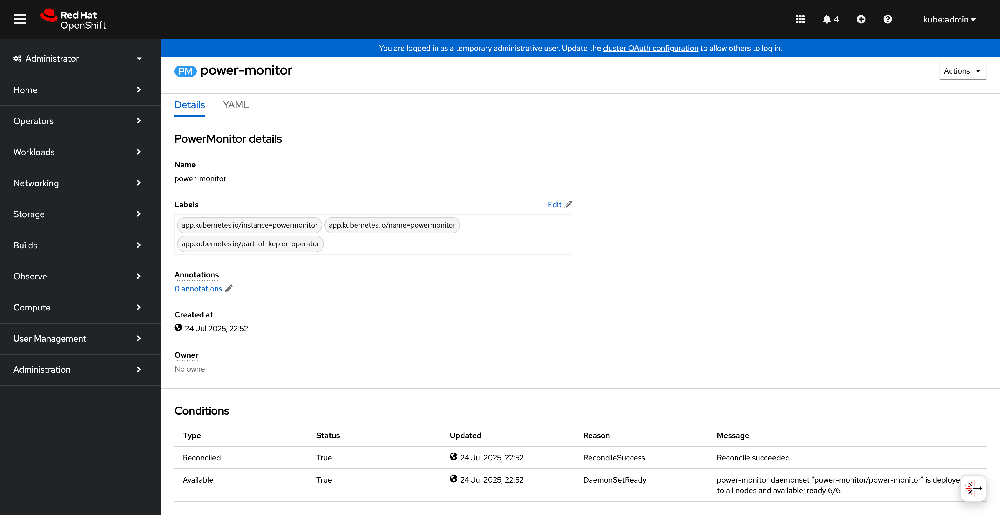
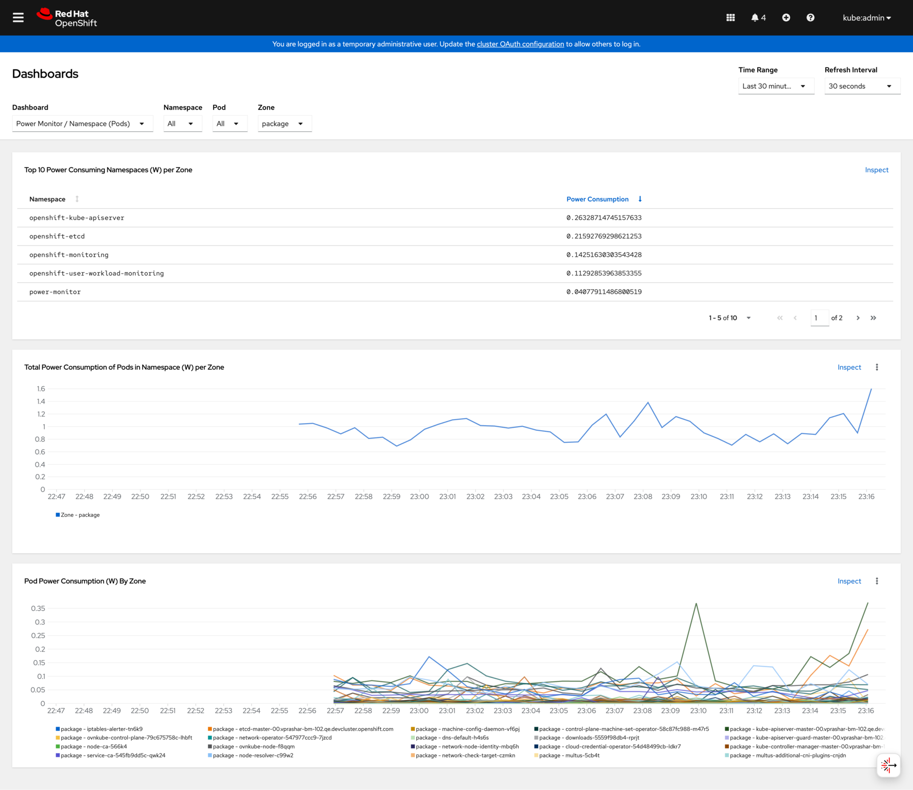

Quick Start Guide: OpenShift OperatorHub
This guide walks you through installing the Kepler Operator using the OpenShift web console and creating your first PowerMonitor instance.
Step 1: Install the Operator
Access OperatorHub
Navigate to Operators → OperatorHub in the OpenShift web console and search for "kepler":
 Kepler operator available in OperatorHub
Start Installation
Click Install to begin the installation process:
 Starting the Kepler operator installation
Monitor Progress
Watch the installation progress in the console:
 Operator installation in progress
Verify Installation
Once the installation completes successfully:
 Operator successfully installed and ready for use
Step 2: Create PowerMonitor Instance
Access Operator Details
Navigate to the operator details to see available APIs:
 Kepler operator details showing PowerMonitor and deprecated Kepler APIs
Open PowerMonitor Tab
Click on the PowerMonitor tab to access the modern API:
 PowerMonitor API tab in operator details
Create PowerMonitor
Click Create PowerMonitor to open the YAML editor:
 PowerMonitor YAML configuration in OpenShift editor
Use this basic configuration:
apiVersion: kepler.system.sustainable.computing.io/v1alpha1
kind: PowerMonitor
metadata:
name: power-monitor
labels:
app.kubernetes.io/name: powermonitor
app.kubernetes.io/instance: powermonitor
app.kubernetes.io/part-of: kepler-operator
spec:
kepler:
config:
logLevel: info
metricLevels:
- node
- pod
- vm
sampleRate: 5s
staleness: 500ms
maxTerminated: 500
deployment:
security:
mode: none
Step 3: Verify Deployment
Check PowerMonitor Status
View the PowerMonitor instance details and status:
 PowerMonitor instance details and status conditions
Verify DaemonSet
Check that the DaemonSet is running on your nodes:
oc get powermonitor power-monitor -o wide
oc get daemonset -n power-monitor
oc get pods -n power-monitor -o wide
Step 4: Access Metrics
OpenShift Metrics Console
Navigate to Observe → Metrics in the OpenShift console:
 OpenShift metrics dashboard showing power consumption overview
OpenShift metrics dashboard showing power consumption overview
View Power Metrics
Explore detailed power consumption metrics:
 Detailed OpenShift metrics dashboard with power consumption charts and node information
Next Steps
Now that you have Kepler running, explore these guides:
- Configuration Guide - Customize your deployment
- Monitoring Setup - Advanced monitoring and Grafana
- Troubleshooting - Common issues and solutions
Quick Reference
Common Commands
# Check PowerMonitor status
oc get powermonitor power-monitor
# View operator logs
oc logs -n openshift-operators deployment/kepler-operator-controller-manager
# Check Kepler pod logs
oc logs -n power-monitor -l app.kubernetes.io/name=kepler-exporter
# Test metrics endpoint
oc port-forward -n power-monitor svc/kepler-exporter 9102:9102
curl http://localhost:9102/metrics